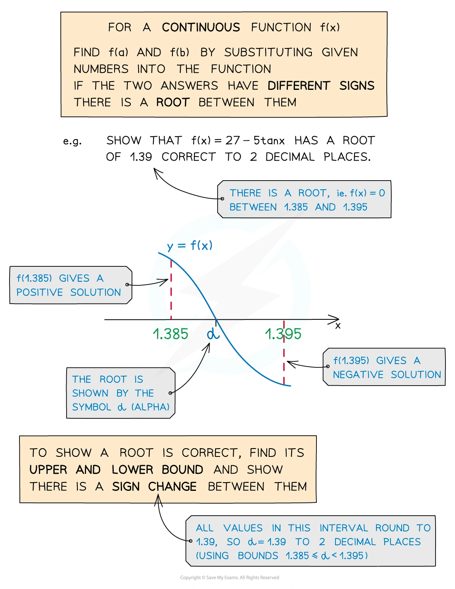
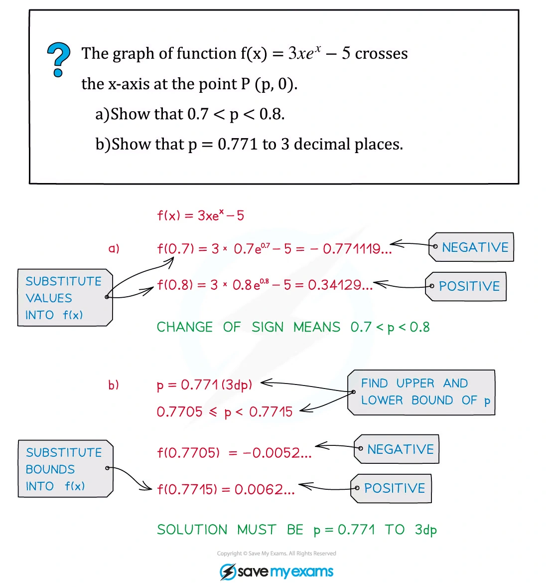
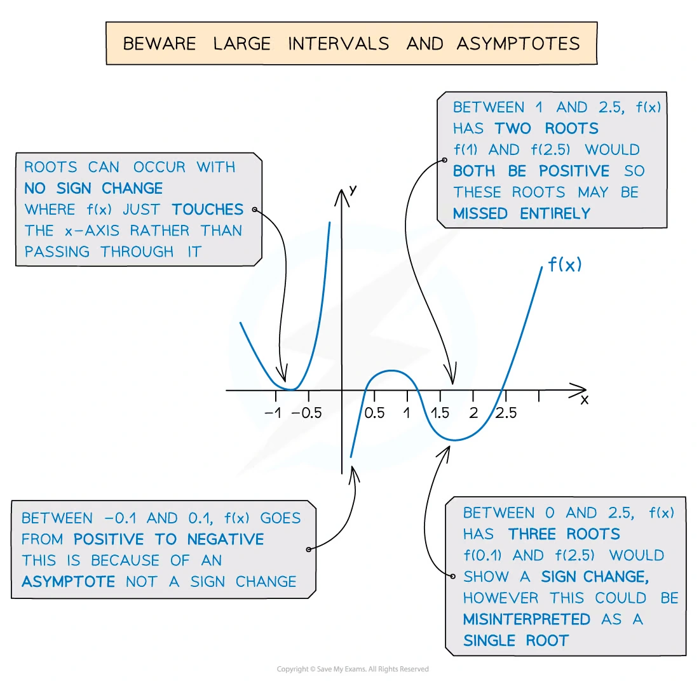
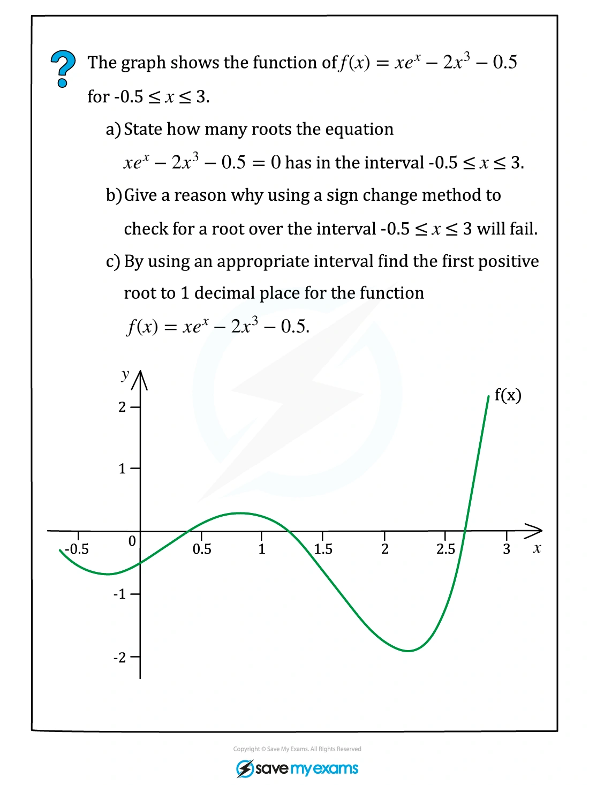
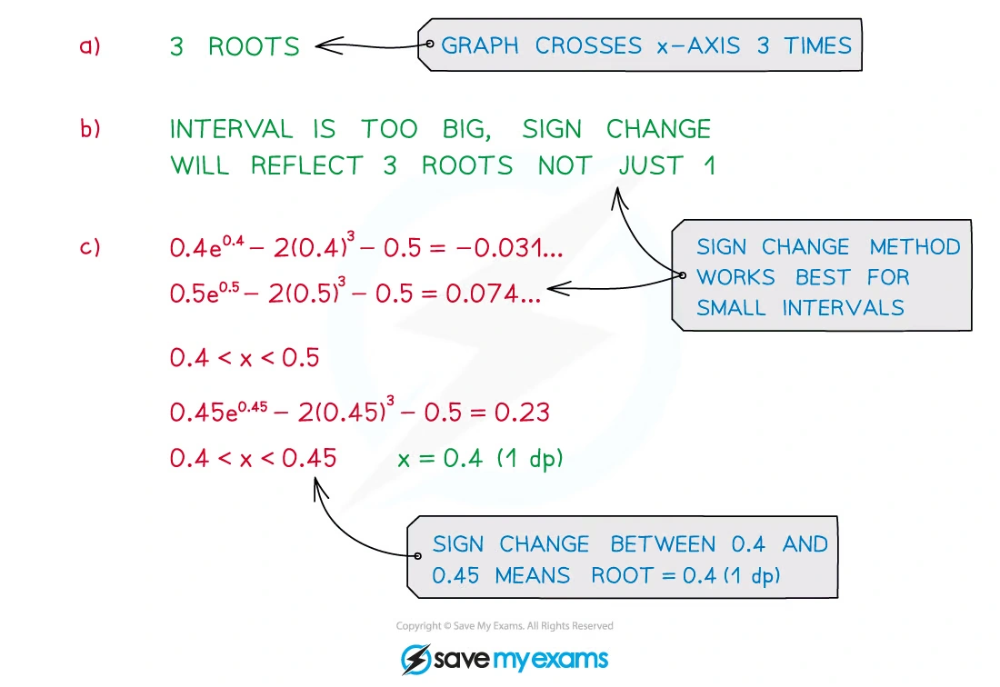
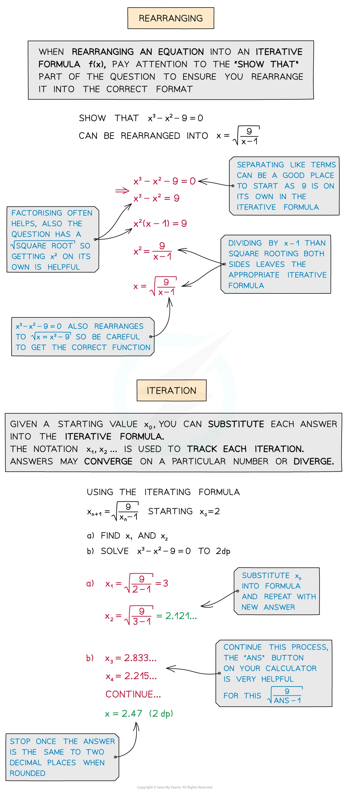
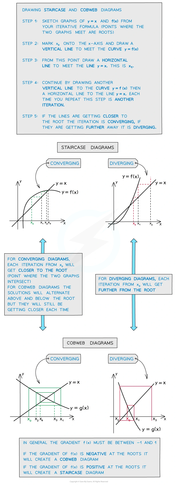
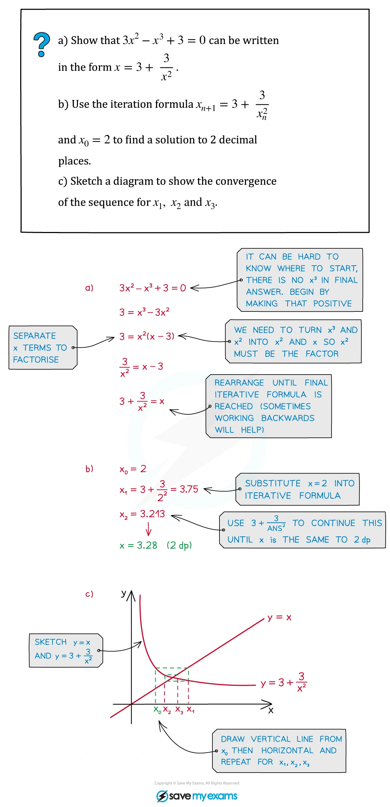

6. Numerical solution of equations
Root location · iteration · accuracy · convergence
本页依据 9709 Mathematics 2026–2027 syllabus 3.6，覆盖：
- 用 graphical considerations 和/或 sign change approximately locate a root，例如找出根所在的两个 consecutive integers；
- 理解表示一列逼近根的 sequence notation；
- 理解给定的 simple iteration x_{n+1}=F(x_n) 与原方程的关系，并使用给定 iteration 或由 rearrangement 得到的 iteration 求 prescribed accuracy 的 root；
- 不要求掌握 convergence condition，但要能理解某个 iteration 可能 fail to converge。
Learning objectives
1. Locating a root
若 f 在 [a,b] 上连续，且
f(a)f(b)<0,
则至少有一个 root alpha 满足 a<alpha<b。考试中通常要明确写出两端的数值和 sign change，而不是只写“由图可知”。
若题目要求 correct to n decimal places，找到的 bounds 应至少能保证所有可能的值都 round 到同一个答案。例如要证明 alpha=1.39 correct to 2 d.p.，可证明
1.385<alpha<1.395.
Worked example · Numerical Methods 笔记第 3 页

Worked example · Numerical Methods 笔记第 4 页

Graphical method
把方程改写为 y=g(x) 和 y=h(x)，在同一坐标系中画两条曲线。它们的 intersections 对应原方程的 roots。答案必须结合题目给出的 interval；例如一个 pair of graphs 可能在全体实数有多个交点，但指定 interval 内只有一个。
2. Iteration and fixed points
给定
x_{n+1}=F(x_n),
从 initial value x_1 出发，依次计算
x_2=F(x_1),qquad x_3=F(x_2),qquad ldots
如果 sequence 收敛到 alpha，则取 limit 得到
alpha=F(alpha).
这只能说明 limit 是 fixed point；题目若已经说明该 interval 内只有一个 root，才能进一步断定它就是要求的 root。不能把“代入 fixed-point equation”误写成“已经证明 iteration 一定收敛”。
Worked example · Numerical Methods 笔记第 5 页

Worked example · Numerical Methods 笔记第 7 页

Worked example · Numerical Methods 笔记第 8 页

Accuracy rule
按题目要求保留 intermediate values。若最终答案要求 2 d.p.，不要在每一步都先 round 到 2 d.p.；应保留更多位数，直到 consecutive values 已经稳定地 round 到同一个 2 d.p. 答案。若题目要求“each iteration to 4 d.p.”，表格中就按 4 d.p. 显示，但计算器内部保留 full precision。
Worked example · Numerical Methods 笔记第 10 页

Worked example · Numerical Methods 笔记第 11 页

Worked example · Numerical Methods 笔记第 12 页

Worked example · Numerical Methods 笔记第 13 页

Worked example · Numerical Methods 笔记第 14 页

Worked example · Numerical Methods 笔记第 15 页

3. Selected Paper 3 questions
以下 20 题保留原 past-paper 题目的英文主文；答案按对应 mark scheme 的得分路径展开。题目中的 $ an{-1}、cos{-1}$ 等均按 radians 计算。
Root location and iteration
Question 1 · 9709/31/M/J/20 Q6(b–c)
sign changeiteration
This equation has one root in the interval 0<x<\frac12\pi. Verify by calculation that this root lies between 1 and 1.4.
Use the iterative formula
x_{n+1}=\tan^{-1}(\pi+x_n)
to determine the root correct to 2 decimal places. Give the result of each iteration to 4 decimal places. [2+3]
Show detailed mark scheme answer
令 f(x)=\tan x-\pi-x。按题目给出的 interval，计算端点：f(1)>0、f(1.4)<0，因此有 sign change，root 在 (1,1.4) 内。
题目已经给出 iteration；用 radians 计算：
\begin{array}{c|c} n&x_n\\ \hline 1&1.0000\ \text{(可取区间内初值)}\\ 2&1.3339\\ 3&1.3510\\ 4&1.3518\\ 5&1.3518 \end{array}
连续项 round 到 2 d.p. 都是 1.35，所以 root \boxed{1.35}。对应得分点是 sign change、至少一次正确 iteration，以及足够的 iterations 支持 rounding。PastPaper/2020/2020/9709-s20-qp-31.pdf, Q6(b–c), and matching mark scheme.
Question 2 · 9709/32/M/J/20 Q9(b)
fixed pointaccuracy
Use the iterative formula
p_{n+1}=\tan^{-1}\left(\frac{1}{1+p_n}\right)
to determine the value of p correct to 3 decimal places. Give the result of each iteration to 5 decimal places. [3]
Show detailed mark scheme answer
从题目给出的 iteration 直接重复代入。取 interval 中的初值 p_1=0.50000，并保留内部精度：
\begin{array}{c|c} n&p_n\\ \hline 1&0.50000\\ 2&0.58800\\ 3&0.56199\\ 4&0.56946\\ 5&0.56730\\ 6&0.56792\\ 7&0.56774\\ 8&0.56779\\ 9&0.56778 \end{array}
因此连续值都 round 到 3 d.p. 的 0.568，故 \boxed{p=0.568}。mark scheme 的 M1 是正确使用 formula；A1 需要足够多项支持 3 d.p.。PastPaper/2020/2020/9709-s20-qp-32.pdf, Q9(b), and matching mark scheme.
Question 3 · 9709/33/M/J/20 Q6(a–c)
Newton iterationunique root
By sketching a suitable pair of graphs, show that the equation x^5=2+x has exactly one real root.
Show that if a sequence of values given by
x_{n+1}=\frac{4x_n^5+2}{5x_n^4-1}
converges, then it converges to the root. Use the iterative formula with initial value x_1=1.5 to calculate the root correct to 3 decimal places. Give the result of each iteration to 5 decimal places. [2+2+3]
Show detailed mark scheme answer
画 y=x^5 与 y=x+2。在负半轴上 x^5<0 而 x+2 只在 x<-2 才为负，且左侧五次曲线增长更快；在正半轴上两曲线只有一个交点。因此按题目 interval 可确认 exactly one real root。
若 x_n\to\alpha，则
\alpha=\frac{4\alpha^5+2}{5\alpha^4-1} \iff 5\alpha^5-\alpha=4\alpha^5+2 \iff \alpha^5=\alpha+2.
从 x_1=1.5 开始：
\begin{array}{c|c} n&x_n\\ \hline 1&1.50000\\ 2&1.33162\\ 3&1.27352\\ 4&1.26724\\ 5&1.26717\\ 6&1.26717 \end{array}
所以 \boxed{x=1.267}。fixed-point algebra 给 2 marks 的核心，iteration 至少正确两次并以稳定值结尾。PastPaper/2020/2020/9709-s20-qp-33.pdf, Q6(a–c), and matching mark scheme.
Question 4 · 9709/31/O/N/20 Q5(b)
iterationroot selection
The sequence of values given by the iterative formula
x_{n+1}=\pi-\sin^{-1}\left(\frac{1}{1+e^{-x_n/2}}\right),
with initial value x_1=2, converges to one of these roots. Use the formula to determine this root correct to 2 decimal places. Give the result of each iteration to 4 decimal places. [3]
Show detailed mark scheme answer
逐项代入，所有 inverse trigonometric functions 用 radians：
\begin{array}{c|c} n&x_n\\ \hline 1&2.0000\\ 2&2.3217\\ 3&2.2760\\ 4&2.2824\\ 5&2.2815\\ 6&2.2816\\ 7&2.2816 \end{array}
后续值稳定在 2.2816\ldots，因此 correct to 2 d.p. 是 \boxed{2.28}。这里不能把另一个 root 当作答案，因为题目已说明 initial value x_1=2 所在的 iteration 收敛到其中一个特定 root。PastPaper/2020/2020/9709_w20_qp_31.pdf, Q5(b), and matching mark scheme.
Question 5 · 9709/32/O/N/20 Q10(b)
rearrangementiteration
The sequence of values given by the iterative formula
a_{n+1}=\pi+\tan^{-1}\left(\frac{1}{2a_n}\right),\qquad a_1=3,
converges to a. Use this formula to determine a correct to 2 decimal places. Give the result of each iteration to 4 decimal places. [3]
Show detailed mark scheme answer
\begin{array}{c|c} n&a_n\\ \hline 1&3.0000\\ 2&3.3067\\ 3&3.2917\\ 4&3.2923\\ 5&3.2923 \end{array}
例如 a_2=\pi+\tan^{-1}(1/6)=3.306741\ldots。连续值 round 到 2 d.p. 都是 3.29，故 \boxed{a=3.29}。mark scheme 要求至少正确使用 formula，并显示足够 terms。PastPaper/2020/2020/9709_w20_qp_32.pdf, Q10(b), and matching mark scheme.
Question 6 · 9709/33/O/N/20 Q5(b)
iterationtrigonometry
The sequence given by
x_{n+1}=\pi-\sin^{-1}\left(\frac{1}{1+e^{-x_n/2}}\right),
with initial value x_1=2, converges to one of these roots. Use the formula to determine this root correct to 2 decimal places. Give the result of each iteration to 4 decimal places. [3]
Show detailed mark scheme answer
这题的 calculation 与 Question 4 相同：
2.0000\to2.3217\to2.2760\to2.2824\to2.2815\to2.2816\to2.2816.
因此 x_n\to2.281615\ldots，所以 \boxed{x=2.28} correct to 2 d.p.。每一项必须把上一项完整代入，而不是把初值 2 重复代入。PastPaper/2020/2020/9709_w20_qp_33.pdf, Q5(b), and matching mark scheme.
Question 7 · 9709/32/M/J/21 Q6(c–d)
fixed pointconvergence
Show that if a sequence of values in the interval 0<x<\frac12\pi given by
x_{n+1}=\cos^{-1}\left(2-\frac{x_n}{0.9\sin x_n}\right)
converges, then it converges to the root of the equation in part (a). Use this iterative formula to determine x correct to 2 decimal places. Give the result of each iteration to 4 decimal places. [2+3]
Show detailed mark scheme answer
若 x_n\to x，则 fixed-point equation 给出
x=\cos^{-1}\left(2-\frac{x}{0.9\sin x}\right).
两边取 cosine：
\cos x=2-\frac{x}{0.9\sin x},
这正是 part (a) 的 equation，因此 limit 是该 root。注意这里证明的是“若 converges，则 limit 是 root”，不是证明 convergence condition。
取 interval 中的 x_1=0.6000：
0.6000\to0.6106\to0.6151\to0.6170\to0.6179\to0.6182\to0.6184\to0.6185.
所以 \boxed{x=0.62} correct to 2 d.p.。PastPaper/2021/2021/9709_s21_qp_32.pdf, Q6(c–d), and matching mark scheme.
Question 8 · 9709/33/M/J/21 Q6(b–c)
boundsiteration
Verify by calculation that the root of \cot\frac{x}{2}=1+e^{-x} lies between 1 and 1.5. Use
x_{n+1}=2\tan^{-1}\left(\frac{1}{1+e^{-x_n}}\right)
to determine the root correct to 2 decimal places. Give each iteration to 4 decimal places. [2+3]
Show detailed mark scheme answer
令 f(x)=\cot(x/2)-1-e^{-x}。计算得到 f(1) 与 f(1.5) signs 相反，所以 root 在 (1,1.5)。
从 x_1=1 开始：
1.0000\to1.2625\to1.3242\to1.3371\to1.3397\to1.3402\to1.3403\to1.3404.
因此 x_n\to1.34036\ldots，答案为 \boxed{1.34}。PastPaper/2021/2021/9709_s21_qp_33.pdf, Q6(b–c), and matching mark scheme.
Rearrangement and prescribed accuracy
Question 9 · 9709/22/O/N/21 Q6(b–d)
logarithmiteration
Verify that the root of \ln x=2e^{-x} lies between 1.5 and 1.6. Show that the given iteration
x_{n+1}=e^{2e^{-x_n}}
converges, if it converges, to the root, and determine the root correct to 3 significant figures. Give each iteration to 5 significant figures. [2+1+3]
Show detailed mark scheme answer
令 f(x)=\ln x-2e^{-x}。代入 1.5 与 1.6 得 opposite signs，因此 root 在该 interval。
若 x_n\to\alpha，则
\alpha=e^{2e^{-\alpha}}\iff\ln\alpha=2e^{-\alpha},
正好回到原方程。
取 x_1=1.50000：
\begin{array}{c|c} n&x_n\\ \hline 1&1.50000\\ 2&1.56246\\ 3&1.52081\\ 4&1.54817\\ 5&1.53001\\ 6&1.54198\\ 7&1.53406\\ 8&1.53929 \end{array}
sequence oscillates while converging to 1.535\ldots，所以 root \boxed{1.54} correct to 3 s.f.。PastPaper/2021/2021/9709_w21_qp_22.pdf, Q6(b–d), and matching mark scheme.
Question 10 · 9709/21/M/J/22 Q5(b–d)
two rootssign change
Show that the larger root of |5-2x|=3\ln x satisfies
x=2.5+1.5\ln x.
Show that the larger root lies between 4.5 and 5.0. Use an iterative formula based on this equation to find the larger root correct to 3 significant figures. Give each iteration to 5 significant figures. [1+2+3]
Show detailed mark scheme answer
对于 larger root，x>2.5，所以 |5-2x|=2x-5。于是
2x-5=3\ln x\iff x=2.5+1.5\ln x.
令 f(x)=2.5+1.5\ln x-x，代入 4.5 与 5.0 得 opposite signs，故 root 在 (4.5,5.0)。
用 x_{n+1}=2.5+1.5\ln x_n，取 x_1=4.5：
4.50000\to4.75612\to4.83915\to4.86511\to4.87313\to4.87561\to4.87637\to4.87660.
所以 larger root \boxed{4.88} correct to 3 s.f.。PastPaper/2022/2022/9709_s22_qp_21.pdf, Q5(b–d), and matching mark scheme.
Question 11 · 9709/22/F/M/22 Q5(c–d)
rearrangementsign change
Show that the x-coordinate of P satisfies
x=\ln10-\frac12\ln(2x-1).
Use an iterative formula based on this equation to find the x-coordinate of P correct to 3 significant figures. Use an initial value of 2 and give each iteration to 5 significant figures. [4+3]
Show detailed mark scheme answer
直接使用题目要求的 rearrangement：
x_{n+1}=\ln10-\frac12\ln(2x_n-1),\qquad x_1=2.
迭代为
2.00000\to1.75328\to1.84313\to1.80851\to1.82157\to1.81660\to1.81848\to1.81777\to1.81804.
后续值为 1.8179\ldots，故 x-coordinate \boxed{1.82} correct to 3 s.f.。注意 2x_n-1 必须保持为正，且每一步用上一项而不是初值。PastPaper/2022/2022/9709_m22_qp_22.pdf, Q5(c–d), and matching mark scheme.
Question 12 · 9709/32/M/J/22 Q5(a–c)
graphical rootiteration
By sketching a suitable pair of graphs, show that the equation
\ln x=3x-x^2
has one real root. Verify that the root lies between 2 and 2.8. Use the iterative formula
x_{n+1}=\sqrt{3x_n-\ln x_n}
to determine the root correct to 2 decimal places. Give each iteration to 4 decimal places. [2+2+3]
Show detailed mark scheme answer
画 y=\ln x 与 y=3x-x^2，在 x>0 上只出现一个 intersection。令 f(x)=3x-x^2-\ln x，则 f(2) 与 f(2.8) signs 相反，故 root 在 (2,2.8)。
若 sequence 收敛到 \alpha，则
\alpha=\sqrt{3\alpha-\ln\alpha} \iff \alpha^2=3\alpha-\ln\alpha \iff \ln\alpha=3\alpha-\alpha^2.
取 x_1=2.6000：
2.6000\to2.6162\to2.6243\to2.6283\to2.6303\to2.6313\to2.6318\to2.6321.
故 root \boxed{2.63} correct to 2 d.p.。PastPaper/2022/2022/9709_s22_qp_32.pdf, Q5(a–c), and matching mark scheme.
Question 13 · 9709/31/M/J/22 Q10(b–d)
convergence statementiteration
The curve y=x\sin x has one stationary point in the interval 0<x<\pi, where x=a.
Verify by calculation that a lies between 2 and 2.5. Show that if a sequence of values in 0<x<\pi given by
x_{n+1}=\pi-\tan^{-1}\left(\frac{x_n}{2}\right)
converges, then it converges to a, the root of the equation in part (a). Use the iterative formula given in part (c) to determine a correct to 2 decimal places. Give the result of each iteration to 4 decimal places. [2+2+3]
Show detailed mark scheme answer
端点代入题目 part (a) 的 equation 得 opposite signs，所以 2<a<2.5。
若 x_n\to\alpha，则
\alpha=\pi-\tan^{-1}(\alpha/2) \iff\tan(\pi-\alpha)=\alpha/2,
这正是 part (a) 的 root equation，因此 limit 是 a。
从 x_1=2.2000 开始：
2.2000\to2.3086\to2.2847\to2.2898\to2.2887\to2.2890\to2.2889.
所以 \boxed{a=2.29}。PastPaper/2022/2022/9709_s22_qp_31.pdf, Q10(b–d), and matching mark scheme.
Question 14 · 9709/21/O/N/22 Q4(b)
exponentialiteration
The equation e^{-x/2}=x^5 has exactly one real root. Use the iterative formula
x_{n+1}=e^{-x_n/10}
to determine the root correct to 4 significant figures. Give the result of each iteration to 6 significant figures. [3]
Show detailed mark scheme answer
由 e^{-x/2}=x^5 取 fifth root 得 x=e^{-x/10}，所以 formula 是与 equation 等价的 fixed-point rearrangement。
取正 root 区间内的 x_1=0.500000：
0.500000\to0.951229\to0.909261\to0.913085\to0.912736\to0.912768\to0.912765.
因此 root =0.912765\ldots，答案为 \boxed{0.9128} correct to 4 s.f.。iteration 结果至少显示到 6 s.f. 才能支持最后的 rounding。PastPaper/2022/2022/9709_w22_qp_21.pdf, Q4(b), and matching mark scheme.
Trigonometric and mixed-function equations
Question 15 · 9709/32/F/M/23 Q7(b–c)
boundssine iteration
Show by calculation that the root of the equation in (a), x=\frac34\sin x+\frac12\pi, lies between 2 and 2.5. Use an iterative formula based on the equation in (a) to calculate this root correct to 2 decimal places. Give the result of each iteration to 4 decimal places. [2+3]
Show detailed mark scheme answer
令 f(x)=x-\frac34\sin x-\frac12\pi。计算 f(2) 与 f(2.5)，两者 signs 相反，所以 root 在 (2,2.5)。
用
x_{n+1}=\frac34\sin x_n+\frac12\pi,
取 x_1=2.2000：
2.2000\to2.1772\to2.1871\to2.1828\to2.1847\to2.1839\to2.1842\to2.1841.
故 root \boxed{2.18} correct to 2 d.p.。PastPaper/2023/2023/9709_m23_qp_32.pdf, Q7(b–c), and matching mark scheme.
Question 16 · 9709/32/M/J/23 Q6(a–c)
inverse trigonometricfixed point
The equation \cot\frac{x}{2}=3x has one root in 0<x<\pi. Show that the root lies between 0.5 and 1. Show that, if positive values given by
x_{n+1}=\frac13\left(x_n+4\tan^{-1}\left(\frac{1}{3x_n}\right)\right)
converge, then they converge to the root. Use this formula to calculate the root correct to 2 decimal places. Give each iteration to 4 decimal places. [2+2+3]
Show detailed mark scheme answer
端点代入 f(x)=\cot(x/2)-3x 得 f(0.5) 与 f(1) signs 相反，故 root 在 (0.5,1)。
若 x_n\to\alpha，则
\alpha=\frac13\left(\alpha+4\tan^{-1}\left(\frac1{3\alpha}\right)\right) \iff \frac{\alpha}{2}=\tan^{-1}\left(\frac1{3\alpha}\right).
两边取 tangent 即得到 \cot(\alpha/2)=3\alpha 的等价 fixed-point form（在题目指定 interval 内取对应 branch）。
取 x_1=1：
1.0000\to0.7623\to0.8037\to0.7921\to0.7951\to0.7943\to0.7945.
所以 root \boxed{0.79}。PastPaper/2023/2023/9709_s23_qp_32.pdf, Q6(a–c), and matching mark scheme.
Question 17 · 9709/31/O/N/23 Q8(a–d)
graphical methodlogarithmic iteration
By sketching a suitable pair of graphs, show that the equation x=e^x-3 has only one root. Show by calculation that this root lies between 1 and 2. Show that, if a sequence given by
x_{n+1}=\ln(3+x_n)
converges, then it converges to the root. Use the iterative formula to calculate the root correct to 2 decimal places. Give each iteration to 4 decimal places. [2+2+1+3]
Show detailed mark scheme answer
画 y=x 与 y=e^x-3，在题目范围内只有一个 intersection。令 f(x)=e^x-3-x，则 f(1) 与 f(2) signs 相反，所以 root 在 (1,2)。
若 x_n\to\alpha，则
\alpha=\ln(3+\alpha)\iff e^\alpha=3+\alpha,
即回到原 equation。
从 x_1=1.5000 开始：
1.5000\to1.5041\to1.5050\to1.5052\to1.5052.
因此 root \boxed{1.51} correct to 2 d.p.。PastPaper/2023/2023/9709_w23_qp_31.pdf, Q8(a–d), and matching mark scheme.
Question 18 · 9709/32/O/N/23 Q6(b–c)
trigonometric equationiteration
Show by calculation that the root of \cot x=2-\cos x lies between 0.6 and 0.8. Use
x_{n+1}=\tan^{-1}\left(\frac{1}{2-\cos x_n}\right)
to determine the root correct to 2 decimal places. Give each iteration to 4 decimal places. [2+3]
Show detailed mark scheme answer
令 f(x)=\cot x-2+\cos x。f(0.6) 与 f(0.8) signs 相反，故 root 在 (0.6,0.8)。
从 x_1=0.7000 开始：
0.7000\to0.6806\to0.6855\to0.6843\to0.6846\to0.6845\to0.6845.
故 root \boxed{0.68} correct to 2 d.p.。因为题目在 interval 内只有 one root，fixed point 的极限不会与另一个 branch 混淆。PastPaper/2023/2023/9709_w23_qp_32.pdf, Q6(b–c), and matching mark scheme.
Question 19 · 9709/31/M/J/23 Q9(b–c)
logarithmic rearrangementiteration
The constant a is such that
\int_0^a xe^{-2x}\,dx=18.
Show that a=\frac12\ln(4a+2). Verify that a lies between 0.5 and 1, and use an iterative formula based on this equation to determine a correct to 2 decimal places. Give each iteration to 4 decimal places. [5+2+3]
Show detailed mark scheme answer
积分并代入上下限：
\int xe^{-2x}dx=-\frac12xe^{-2x}-\frac14e^{-2x}+C.
把 0 与 a 代入题目给出的 condition，整理后得到
e^{2a}=4a+2\iff a=\frac12\ln(4a+2).
用 f(a)=\frac12\ln(4a+2)-a 检查 0.5 与 1，得 sign change；然后用
a_{n+1}=\frac12\ln(4a_n+2),\qquad a_1=0.7000:
0.7000\to0.7843\to0.8183\to0.8313\to0.8362\to0.8381\to0.8388\to0.8390.
因此 \boxed{a=0.84} correct to 2 d.p.。PastPaper/2023/2023/9709_s23_qp_31.pdf, Q9(b–c), and matching mark scheme.
Question 20 · 9709/32/M/J/24 Q5(a–c)
exponential-logarithmiciteration
It is given that the equation
e^{2x}=5+\cos3x
has only one root. Show by calculation that this root lies in the interval 0.7<x<0.8. Show that if a sequence in this interval given by
x_{n+1}=\frac12\ln(5+\cos3x_n)
converges then it converges to the root. Use this iterative formula to determine the root correct to 3 decimal places. Give the result of each iteration to 5 decimal places. [2+1+3]
Show detailed mark scheme answer
令 f(x)=e^{2x}-5-\cos3x。代入 0.7 与 0.8 得 opposite signs，所以 root 在 (0.7,0.8)。
若 x_n\to\alpha，则
\alpha=\frac12\ln(5+\cos3\alpha) \iff e^{2\alpha}=5+\cos3\alpha,
所以 limit 是原方程的 root。
取区间中点 x_1=0.75000：
\begin{array}{c|c} n&x_n\\ \hline 1&0.75000\\ 2&0.73759\\ 3&0.74094\\ 4&0.74003\\ 5&0.74028\\ 6&0.74021\\ 7&0.74023\\ 8&0.74022 \end{array}
因此 root \boxed{0.740} correct to 3 d.p.。这里选 0.75 作为 interval 内初值；每项应按题目要求显示 5 d.p.。PastPaper/2024/2024/9709/9709/32/M/J/24, Q5(a–c), and matching mark scheme.
Exam checklist
- 先定义 f(x)，再写两端的数值和 sign change。
- 写 fixed-point proof 时先设 x_n\to\alpha，再取 limit；不要声称这一步证明了 convergence。
- 题目给出的 iteration 优先照用；自己 rearrange 时检查是否会选择错误 root。
- 每次用上一项代入，保持 radians，并按题目要求输出 iteration 的位数。
- 最后用 consecutive values 或 bounds 说明 rounding，而不是只写最后一项。